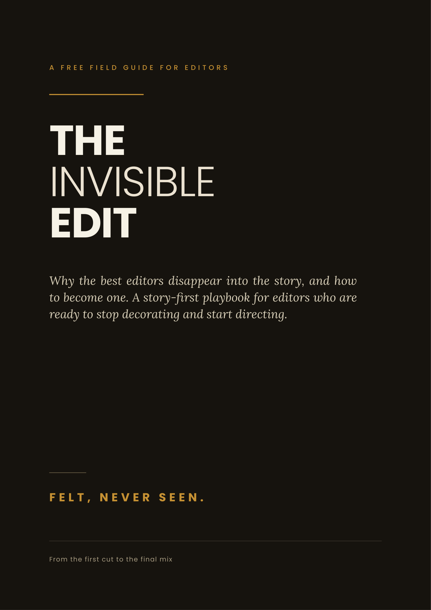

Get The Invisible Edit free — 25 pages, 9 chapters, on what separates editors who decorate from editors who direct. Enter your name and email below and the PDF is sent straight to your inbox.

25 pages · 9 chapters · PDF
You fell in love because something you watched made you feel something. A scene, a montage, a film that hit you in the chest and would not let go. You watched it again and thought: I want to do that.
Then look at what the craft turned into. Graphics flying in every three seconds. A whoosh on every subtitle. Sound design that pops so hard it stops sounding like anything real. Cuts so fast that nothing is allowed to land, let alone breathe.
And everyone is doing it. That look stopped being a differentiator a long time ago — it became the default, and the market for it is saturated. When every editor is competing on who can decorate hardest, decoration is worth nothing.
Meanwhile the editors who quietly get paid the most are not doing any of it. They are doing the thing you originally fell for: letting a story unfold. This guide is how they think.
No effect tutorials. No preset packs. This is the way of thinking that separates editors who decorate from editors who direct — written to be read with a project open.
Editing is storytelling, and the proof is a hundred years old. The experiment every editor should know cold.
Why adding more makes the work look smaller — and what high-paying clients are actually buying instead.
Motivated cuts, the four honest reasons to cut, and the one-word filter that fixes a restless edit.
Pacing is not speed. It is how you make a person breathe — and the four levers that control it.
The three audio layers in priority order, where every sound goes and why, plus J-cuts and L-cuts.
Start with a feeling, never a genre. Beds versus builds, and the exact build-to-reveal method.
Make the story work naked, then dress it. The full pass order, and why polish early hides problems.
The clip you were about to delete is often the best one. Mining outtakes, and b-roll that earns its place.
You are building taste, and taste is what compounds. Steal structure, not effects.
25 pages, 9 chapters, no cost. Enter your name and email and it lands in your inbox.